← Интерактивные среды
GIF: кто что делает
Что у нас пришло из BFCL
18 принятых командных задач на инструментах BFCL — все с GIF ниже. BFCL (Berkeley Function Calling Leaderboard) дал нам готовые программные инструменты: файлы, автомобиль, торговлю, заявки, публикации и сообщения. Цели, распределение ролей и обмен внутри команды в этих задачах созданы в нашем проекте; это не исходные многоагентные игры BFCL.
В двух LLM-партиях модель-автор придумала 13 задач, из которых 12 допущены в проверенной области. Ещё шесть процедурных экземпляров построены по общей цепочке. Под каждым GIF перечислены инструменты BFCL, функции участников и цель. Пунктир с конвертом показывает фактическую доставку сообщения между игроками.
Как читать результаты. GIF показывает один сохранённый CPU-повтор. Числа под ним относятся к конечному набору миров и фиксированным меню действий; они не измеряют успешность играющей LLM. Созданный торговый ордер не означает исполненную сделку, закрытая заявка не означает физический ремонт.
Исходные адаптации BFCL и границы подборки
Ранее мы подготовили каталог из 2 196 задач BFCL с распределением инструментов или контекста между ролями: 608 многошаговых, 400 с выбором или параллельным вызовом функций, 1 075 из live-категорий и 113 задач памяти. Это подготовленные входы, а не 2 196 новых механик или проверенных командных игр; готовой серии GIF для них нет.
Отдельно сохранены 48 диагностических вариантов трёх исходных задач: multi_turn_base_75 (топливо, шины и публикация), multi_turn_base_100 (котировка Nvidia и пополнение торгового счёта), multi_turn_base_155 (перелёт и страховка). Они не входят в 18 показанных задач и не имеют такого же допуска. Подборка ниже объединяет принятые новые командные задачи на BFCL API. Источник инструментов: официальный репозиторий BFCL.
BFCL: девять задач второй LLM-партии
Девять записанных CPU-прохождений. Под каждым GIF указано, кто что делает. Цвет связывает агента с предметом; пунктир и конверт показывают реальную передачу между агентами. Внешние уведомления показаны отдельно.
Из десяти созданных задач девять прошли CPU-проверки и смысловой разбор. LBG102 (контрольная заявка) остаётся UNKNOWN после 300 000 вершин в трёх контролях и не показана. Это CPU-повторы, не игры модели.
LBG101 (Проверить закрытую заявку и сообщить о покупке)
Инструменты BFCL: файлы · котировки и ордера · публикации.
Кто что делает
- Архивариус — Читает бриф и передаёт тикер трейдеру и пресс-секретарю.
- Пресс-секретарь — Получает бриф и ответ об ордере, публикует тикер и цену.
- Трейдер — Проверяет котировку, создаёт ордер и передаёт его пресс-секретарю.
Создать ордер по закрытому брифу и опубликовать сообщение о нём.
С доставкой 2/2; точный оптимум без доставки 1/2. В GIF один сохранённый мир.Скачать GIF
LBG103 (Покупка по закрытому бюллетеню)
Инструменты BFCL: файлы · заявки · котировки и ордера.
Кто что делает
- Архивист — Читает бюллетень и передаёт рекомендацию сотруднику комплаенса.
- Брокер — Получает разрешение, проверяет котировку и размещает торговый ордер.
- Комплаенс — Оформляет заявку-разрешение на покупку и передаёт её брокеру.
По закрытому бюллетеню открыть заявку и создать ордер по текущей котировке.
С доставкой 4/4; точный оптимум без доставки 2/4. В GIF один сохранённый мир.Скачать GIF
LBG104 (Сообщение по маршруту осмотра)
Инструменты BFCL: файлы · внешние сообщения · автомобиль.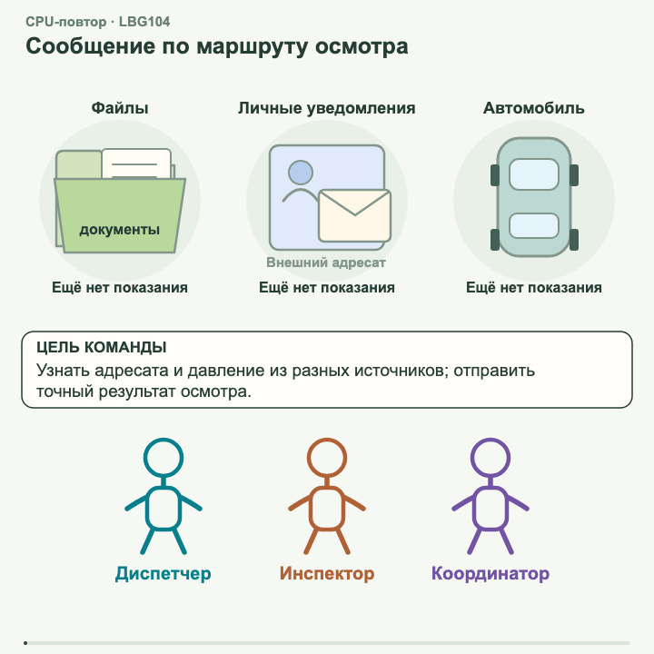
Кто что делает
- Диспетчер — Собирает адресата и показание от коллег, отправляет уведомление.
- Инспектор — Измеряет давление в шинах и передаёт результат диспетчеру.
- Координатор — Читает адресата в маршрутном файле и сообщает его диспетчеру.
Узнать адресата и давление из разных источников; отправить точный результат осмотра.
С доставкой 4/4; точный оптимум без доставки 1/4. В GIF один сохранённый мир.Скачать GIF
LBG105 (Проверка давления и диспетчерская заявка)
Инструменты BFCL: внешние сообщения · заявки · автомобиль.
Кто что делает
- Диспетчер — По показанию открывает и закрывает заявку, затем уведомляет Bob.
- Механик — Проверяет давление в шинах и передаёт показание диспетчеру.
По показанию давления открыть и закрыть заявку, затем уведомить Bob.
С доставкой 4/4; точный оптимум без доставки 2/4. В GIF один сохранённый мир.Скачать GIF
LBG106 (Проверка и регистрация поручения DEMO)
Инструменты BFCL: файлы · внешние сообщения · котировки и ордера.
Кто что делает
- Планировщик — Читает разрешённый объём покупки и передаёт его трейдеру.
- Регистратор — Уведомляет Bob о созданном ордере и сохраняет его параметры в файл.
- Трейдер — Проверяет цену DEMO, создаёт ордер и передаёт ответ регистратору.
Создать ордер DEMO нужного объёма и цены, уведомить Bob и записать результат в файл.
С доставкой 4/4; точный оптимум без доставки 1/4. В GIF один сохранённый мир.Скачать GIF
LBG107 (Заявка на ночную проверку машины)
Инструменты BFCL: файлы · заявки · автомобиль.
Кто что делает
- Архивариус — Читает сектор выезда, сообщает его диспетчеру и записывает итог в журнал.
- Диспетчер — По сектору и давлению от коллег открывает и закрывает сервисную заявку.
- Техник — Измеряет давление, сообщает его диспетчеру и включает фары.
Проверить давление, включить фары, закрыть заявку нужного сектора и сохранить журнал.
С доставкой 4/4; точный оптимум без доставки 1/4. В GIF один сохранённый мир.Скачать GIF
LBG108 (Подготовка топливного резерва смены)
Инструменты BFCL: внешние сообщения · котировки и ордера · автомобиль.
Кто что делает
- Водитель — Измеряет топливо, сообщает исходный запас коллегам и доливает до 10 галлонов.
- Казначей — Проверяет цену FUEL и создаёт ордер нужного объёма по правилу смены.
- Связист — Находит контакт руководителя и отправляет уведомление об исходном запасе.
Довести топливо до 10 галлонов, создать ордер FUEL по правилу смены и уведомить руководителя.
С доставкой 4/4; точный оптимум без доставки 2/4. В GIF один сохранённый мир.Скачать GIF
LBG109 (Подготовка автомобиля к выезду с поста)
Инструменты BFCL: файлы · публикации · автомобиль.
Кто что делает
- архивариус — Читает пост, записывает результат заправки и передаёт название поста редактору.
- редактор — По названию поста публикует сообщение о готовности автомобиля.
- техник — Измеряет топливо, доливает до 20 галлонов и сообщает результат архивариусу.
Долить топливо до 20 галлонов, записать квитанцию нужного поста и опубликовать готовность.
С доставкой 4/4; точный оптимум без доставки 2/4. В GIF один сохранённый мир.Скачать GIF
LBG110 (Сверка закрытого уведомления по двум каналам)
Инструменты BFCL: файлы · внешние сообщения · публикации.
Кто что делает
- архивариус — Читает записку, сохраняет отметку в файл и передаёт текст координатору.
- координатор — Отправляет текст дежурному и пересылает записку пресс-секретарю.
- пресс-секретарь — Публикует точный текст записки комментарием под служебной записью.
Сверить закрытый текст и сохранить его в файле, личном сообщении и публичном комментарии.
С доставкой 4/4; точный оптимум без доставки 2/4. В GIF один сохранённый мир.Скачать GIF
Проверка ограничена заданными меню, мирами и расписанием. Pending означает созданный ордер, а не исполненную сделку. Закрытие заявки не является ремонтом шины.
BFCL: три задачи первого LLM-пилота
Модель-автор составила новые задачи на тройках готовых инструментов BFCL. В GIF исполняется сохранённое CPU-прохождение; игровая модель здесь не участвовала.
LBG001 (Давление шин и уведомление мастерской)
Инструменты BFCL: внешние сообщения · публикации · автомобиль.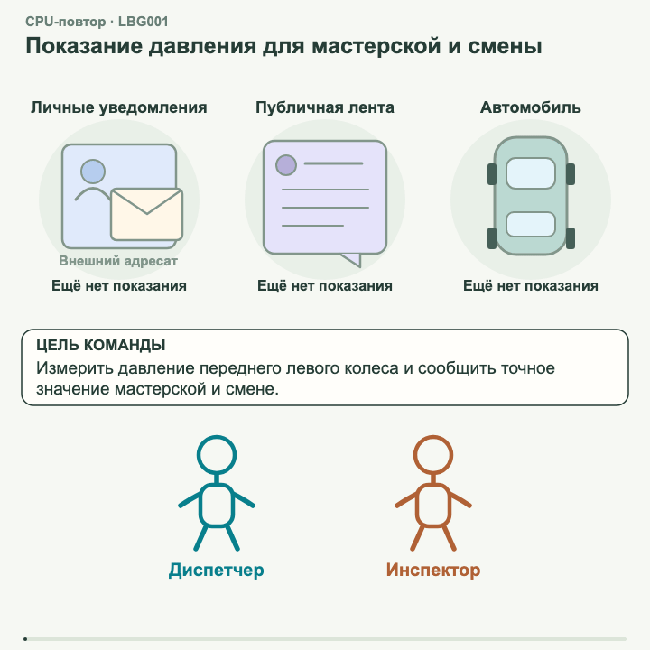
Кто что делает
- Диспетчер — Находит ID мастерской, отправляет точное давление и публикует его для смены.
- Инспектор — Измеряет давление переднего левого колеса и передаёт показание диспетчеру.
Передать мастерской и смене точное давление переднего левого колеса.
С доставкой 3/3; точный оптимум без доставки 1/3. В GIF один сохранённый мир. CPU-повтор, не игра модели.Скачать GIF
LBG002 (Котировка и подготовка автомобиля)
Инструменты BFCL: файлы · котировки и ордера · автомобиль.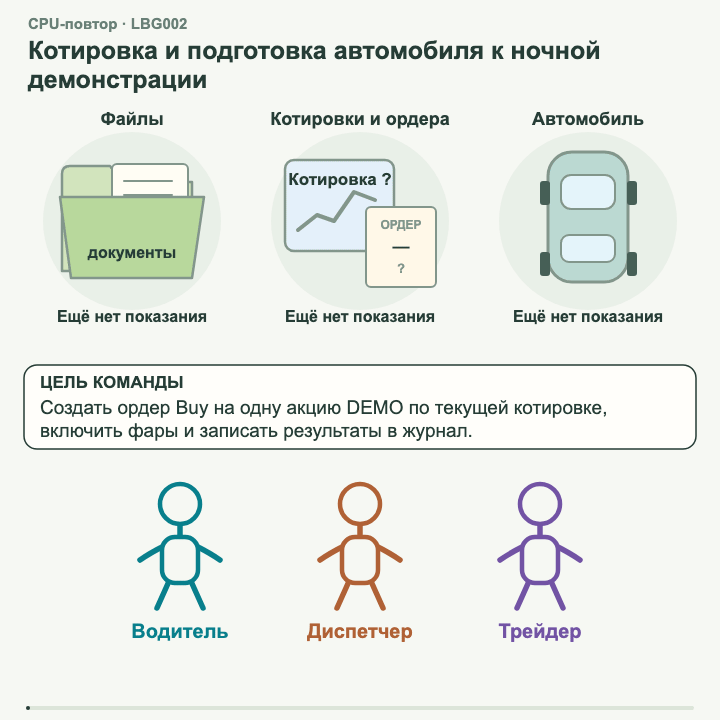
Кто что делает
- Водитель — Проверяет уровень топлива, включает фары и передаёт результаты диспетчеру.
- Диспетчер — Вносит котировку, уровень топлива и состояние фар в журнал смены.
- Трейдер — Читает котировку DEMO, создаёт ордер Buy на одну акцию и передаёт цену диспетчеру.
Создать ордер Buy на одну акцию DEMO по текущей цене, включить фары и сохранить результаты проверки в журнале смены.
С доставкой 4/4; точный оптимум без доставки 1/4. В GIF один сохранённый мир. CPU-повтор, не игра модели.Скачать GIF
LBG003 (Ордер по сигналу и котировке)
Инструменты BFCL: внешние сообщения · котировки и ордера · публикации.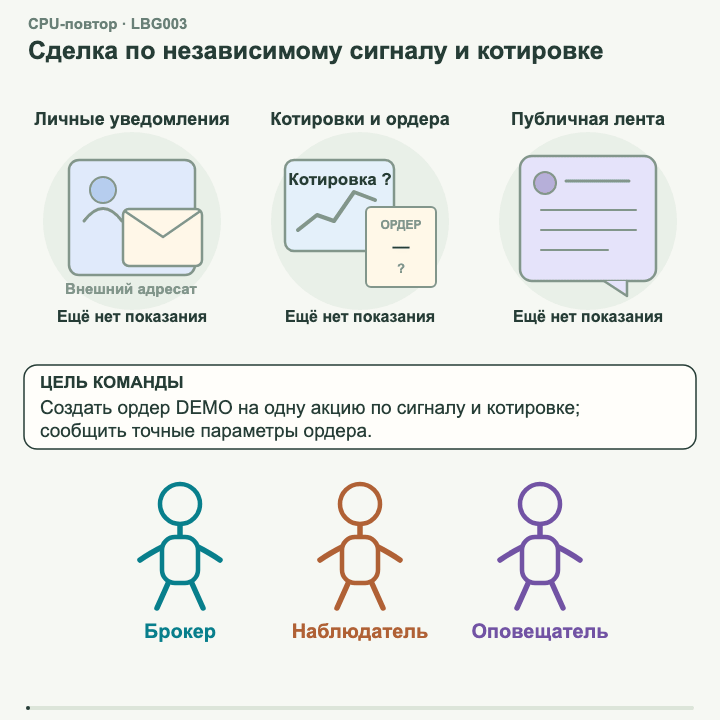
Кто что делает
- Брокер — Получает сигнал и котировку, создаёт ордер на одну акцию в направлении сигнала.
- Наблюдатель — Читает сигнал BUY/SELL и сообщает его брокеру.
- Оповещатель — Публикует параметры созданного ордера и отправляет то же сообщение операционному столу.
Создать ордер DEMO на одну акцию в направлении сигнала по текущей цене; точно опубликовать и отправить его поля.
С доставкой 4/4; точный оптимум без доставки 1/4. В GIF один сохранённый мир. CPU-повтор, не игра модели.Скачать GIF
BFCL: шесть процедурных вариантов
Шесть экземпляров трёх композиций с общей цепочкой: личное показание → заявка → публикация → подтверждение. Это варианты одного протокола, а не шесть независимых механик.
BTS001 (Отметка техосмотра)
Инструменты BFCL: файлы · заявки · публикации.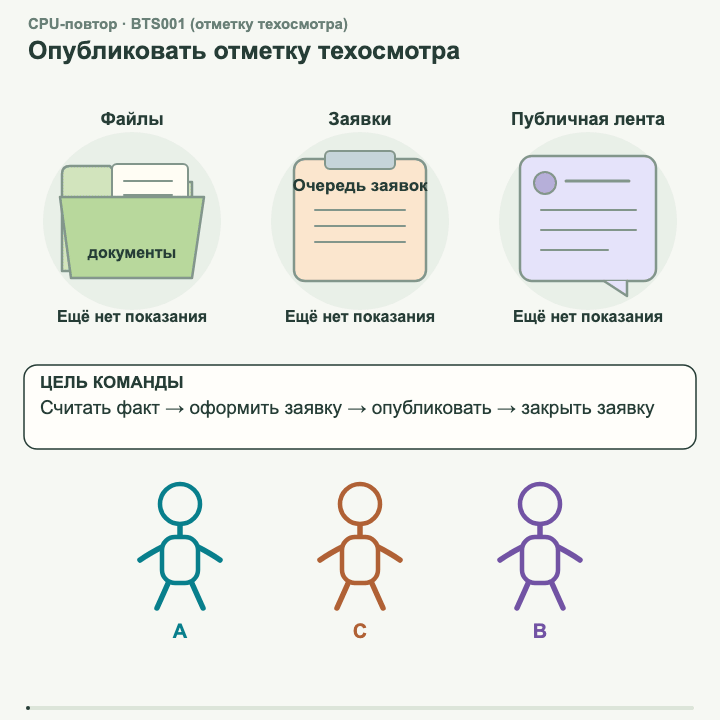
Кто что делает
- A — Читает файл inspection_flag.txt с фактом «отметка техосмотра»; передаёт показание C
- C — Создаёт заявку; передаёт её данные B
- B — Публикует показание; возвращает номер записи C
Взять из файла inspection_flag.txt отметку техосмотра, создать заявку, опубликовать показание и номер заявки, затем закрыть её с номером публикации.
С доставкой 8/8; точный оптимум без доставки 1/8. В GIF один сохранённый мир. CPU-повтор, не игра модели.Скачать GIF
BTS002 (Котировка NOVA)
Инструменты BFCL: котировки и ордера · заявки · публикации.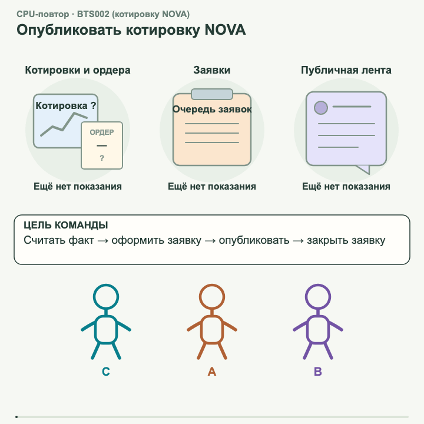
Кто что делает
- C — Запрашивает котировку NOVA; передаёт показание A
- A — Создаёт заявку; передаёт её данные B
- B — Публикует показание; возвращает номер записи A
Получить котировку NOVA, создать заявку, опубликовать показание и номер заявки, затем закрыть её с номером публикации.
С доставкой 8/8; точный оптимум без доставки 1/8. В GIF один сохранённый мир. CPU-повтор, не игра модели.Скачать GIF
BTS003 (Давление передней левой шины)
Инструменты BFCL: автомобиль · заявки · публикации.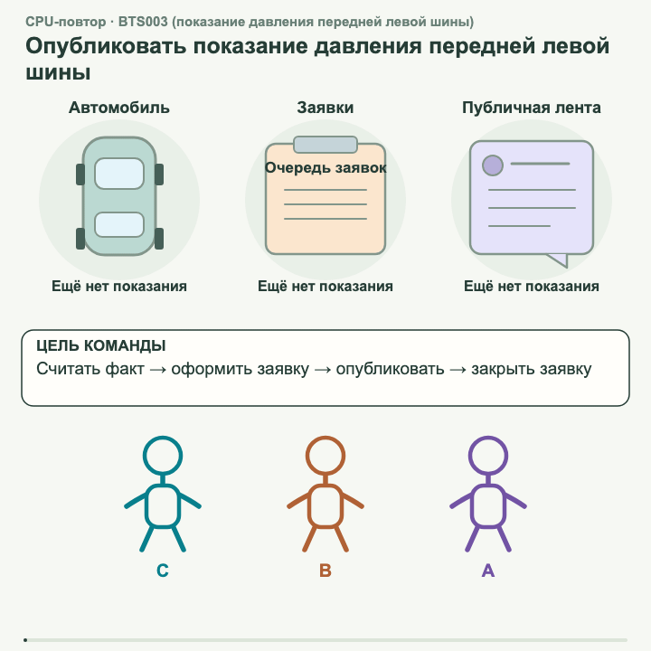
Кто что делает
- C — Считывает давление передней левой шины датчиком; передаёт показание B
- B — Создаёт заявку; передаёт её данные A
- A — Публикует показание; возвращает номер записи B
Считать давление передней левой шины с датчика, создать заявку, опубликовать показание и номер заявки, затем закрыть её с номером публикации.
С доставкой 8/8; точный оптимум без доставки 1/8. В GIF один сохранённый мир. CPU-повтор, не игра модели.Скачать GIF
BTS004 (Статус зоны разгрузки)
Инструменты BFCL: файлы · заявки · публикации.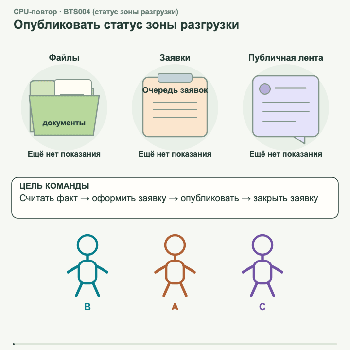
Кто что делает
- B — Читает файл loading_zone.txt с фактом «статус зоны разгрузки»; передаёт показание A
- A — Создаёт заявку; передаёт её данные C
- C — Публикует показание; возвращает номер записи A
Взять из файла loading_zone.txt статус зоны разгрузки, создать заявку, опубликовать показание и номер заявки, затем закрыть её с номером публикации.
С доставкой 8/8; точный оптимум без доставки 1/8. В GIF один сохранённый мир. CPU-повтор, не игра модели.Скачать GIF
BTS005 (Давление задней правой шины)
Инструменты BFCL: автомобиль · заявки · публикации.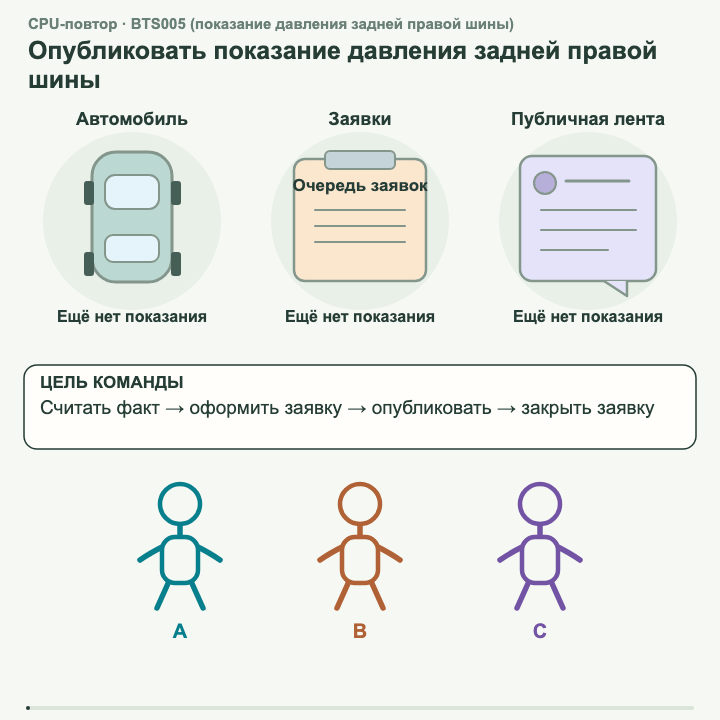
Кто что делает
- A — Считывает давление задней правой шины датчиком; передаёт показание B
- B — Создаёт заявку; передаёт её данные C
- C — Публикует показание; возвращает номер записи B
Считать давление задней правой шины с датчика, создать заявку, опубликовать показание и номер заявки, затем закрыть её с номером публикации.
С доставкой 8/8; точный оптимум без доставки 1/8. В GIF один сохранённый мир. CPU-повтор, не игра модели.Скачать GIF
BTS006 (Котировка ACME)
Инструменты BFCL: котировки и ордера · заявки · публикации.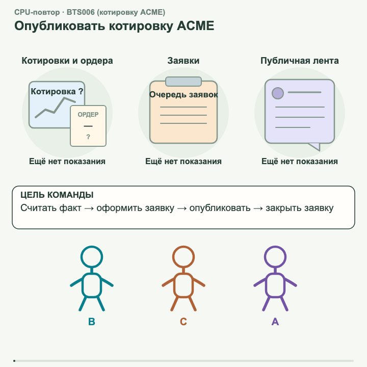
Кто что делает
- B — Запрашивает котировку ACME; передаёт показание C
- C — Создаёт заявку; передаёт её данные A
- A — Публикует показание; возвращает номер записи C
Получить котировку ACME, создать заявку, опубликовать показание и номер заявки, затем закрыть её с номером публикации.
С доставкой 8/8; точный оптимум без доставки 1/8. В GIF один сохранённый мир. CPU-повтор, не игра модели.Скачать GIF
Пять предметных сред
Сохранённые успешные CPU-прохождения: объекты, действия участников и поздние личные показания. Это планы с объединением законных наблюдений, без переписки между агентами; не игры модели.
E121 (три слоя мира)
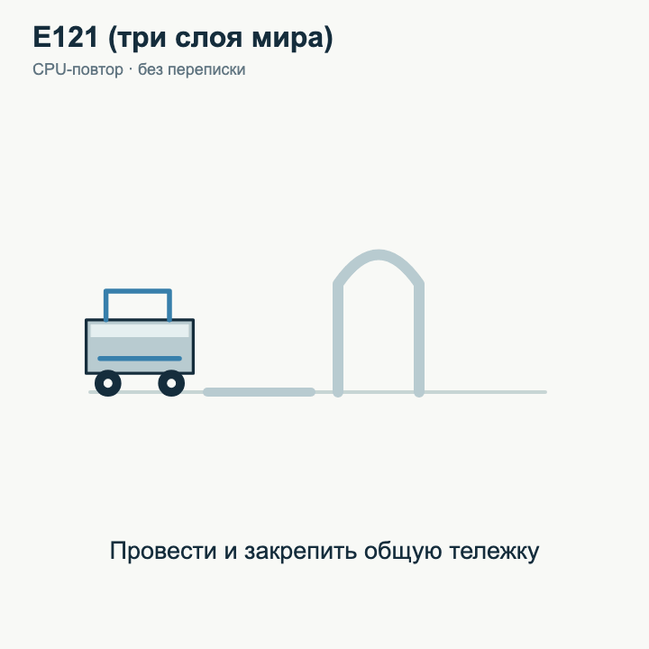
Кто что делает
- Стекло — Читает шарнир и конечный захват, выбирает опору и управляет стеклянными устройствами.
- Корни — Читает арку и тип опоры, передвигает тележку и прокладывает трос.
- Камень — Закрепляет мост и опоры, читает канал троса и выбирает конечный захват.
CPU-повтор с объединением законных наблюдений. Отправок и доставок сообщений в этой записи нет.Скачать GIF
NG017 (подводные пробы)

Кто что делает
- Геолог — Анализирует первую пробу и выбирает, как обработать поверхность второй.
- Биолог — Обследует колонию и проход, выбирает безопасный способ отхода.
- Оператор — Управляет аппаратом, берёт пробы и проверяет поверхность и положение полипов.
CPU-повтор с объединением законных наблюдений. Отправок и доставок сообщений в этой записи нет.Скачать GIF
E057 (мяч и приёмник)

Кто что делает
- Север — Подаёт мяч и считывает его вращение и движение приёмного кольца.
- Восток — Отражает мяч, ставит тормоз и считывает фазу кулачка.
- Юг — Ловит мяч, читает наклон рельса и выбирает порядок стопорения.
- Запад — Отражает мяч, затягивает подшипник и проверяет смещение рамы.
CPU-повтор с объединением законных наблюдений. Отправок и доставок сообщений в этой записи нет.Скачать GIF
E138 (посадка самолёта)

Кто что делает
- Пилот — Выбирает тягу, сажает самолёт и включает реверс.
- Офицер — Управляет шасси и рулением, затем проверяет температуру тормозов.
- Инженер — Считывает ветер, выпускает закрылки и охлаждает тормоза.
- Штурман — Проверяет движение на полосе и узнаёт, какой съезд доступен.
CPU-повтор с объединением законных наблюдений. Отправок и доставок сообщений в этой записи нет.Скачать GIF
NG008 (эвакуация запасов)

Кто что делает
- Инспектор — Обследует затопление и резервное питание, выводит людей.
- Инженер — Подключает безопасное питание и проверяет воздушный канал.
- Логист — Перевозит и расставляет запасы, затем определяет сторону притока воды.
- Координатор — Выбирает защищённый подход и перекрывает приток с нужной стороны.
CPU-повтор с объединением законных наблюдений. Отправок и доставок сообщений в этой записи нет.Скачать GIF